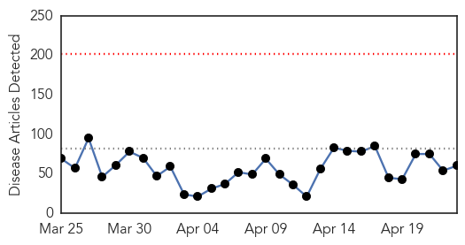
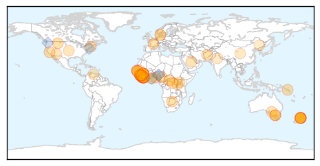
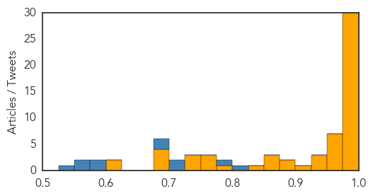
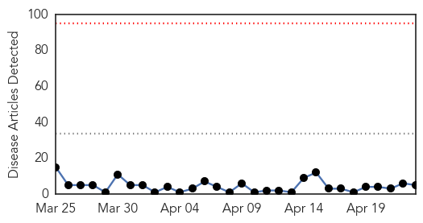

Ebola
30-Day Web Trend
0 alerts, 0 warnings

30-Day Twitter Trend
0 alerts, 0 warnings

Article Locations
Article Confidences
Top Articles:
- 1.000
- Ebola outbreak reaches Senegal, riots break out in Guinea
- 1.000
- Ebola Outbreak Spreads to Conakry, Poses New Challenges
- 1.000
- In Sierra Leone, a chance to learn from Ebola
- 1.000
- "More than 26,000 have contracted the deadly Ebola virus"
- 0.999
- Experimental drug saves monkeys infected with Ebola virus
- 0.999
- Kiwi healthcare worker tested for Ebola
- 0.999
- Sierra Leone hunts Ebola quarantine escapees
- 0.998
- Ebola test drug saved monkey lives: trial results – BorneoPost Online
- 0.998
- New Zealand health worker being tested for Ebola after returning from Africa
- 0.998
- Ebola Death Toll In Guinea Rises To 78
- 0.998
- Ebola drug cures infected monkeys
- 0.997
- Reports detail experimental Ebola treatment, virus evolution
- 0.996
- Engineers create advanced Ebola suit to better protect those in the field
- 0.996
- Healthcare worker tested for Ebola in New Zealand
- 0.996
- Sierra Leone President Bemoans Ebolas Impact
- 0.995
- Scientists to share genetic data on Mers and Ebola
- 0.995
- Vaccine Cures Monkeys Of Deadly Ebola Virus
- 0.995
- Hunt on for seven
- 0.994
- Ebola tests for NZ healthcare worker
- 0.992
- Ebola Drug Cures Infected Monkeys
- 0.991
- Recall Issued for Ebola Virus One-Step Test Kits
- 0.990
- Ebola: World Bank Group Provides New Financing to Help Guinea, Liberia and Sierra Leone Recover from Ebola Emergency
- 0.990
- WHO Regional Director for Africa, Dr. Matshidiso Moeti, Meets with President Sirleaf;Promises Support to Rebuilding a Resilient Healthcare System in Liberia
- 0.990
- Mathematical assessment of the effect of traditional beliefs and customs on the transmission dynamics of the 2014 Ebola outbreaks
- 0.989
- Liberia's Ebola Fight A Model for the Sub-Region Says WHO Regional Director
- 0.989
- Response to ACT Ebola scare very effective despite delay, chief doctor says
- 0.989
- WHO Africa Regional Director Praises Liberia’s Response to Ebola Fight
- 0.985
- West and Central Africa Region Weekly Humanitarian snapshot 14 - 20 April 2015 - Cameroon
- 0.980
- Drug Cures Monkeys Infected With Ebola
- 0.980
- Ghana To Establish An Infectious Disease Center
- 0.974
- Returned healthcare worker being tested to rule out Ebola
- 0.973
- Returned healthcare worker being tested to rule out Ebola
- 0.973
- Guinea reopens border with Liberia
- 0.964
- AU commends financial support worth 950 mln USD in fight against Ebola - Xinhua
- 0.963
- Ebola: experimental drug cures monkeys infected with the virus
- 0.963
- One Day Killer Disease In Nigeria Linked To Poisoning
- 0.950
- Another NZ health worker in isolation, being tested for Ebola
- 0.942
- Ebola midwife: ‘The hardest but best thing I’ve done’
- 0.942
- Ebola scare puts nurse in isolation
- 0.938
- Malaria vaccine a breakthrough despite being partially effective, say scientists
- 0.902
- Update: Ebola and Boston University Global Programs
- 0.898
- Ode-Irele strange deaths: Between tradition and orthodox medicine
- 0.885
- 59th MDW Airman returns from deployment to Liberia
- 0.874
- Saudi Arabia Assures Sierra Leone in Post Ebola Recovery Plan
- 0.867
- Ebola survivors narrate ordeal
- 0.851
- Researchers inform development of Ebola vaccine trials
- 0.833
- Ebola survivors face long-term adverse health effects: Study
- 0.777
- Ebola: experimental vaccine trial an 'unqualified success'
- 0.771
- What Did the U.S. Learn From Ebola? How to Prepare for Bioterrorist Attacks
- 0.754
- Africa
Showing top 50 articles...
Top Tweets:
- 0.813
- Today's Ebola executive summary looks at TKM-Ebola-Guinea which has recently cured Ebola in monkeys http://t.co/5rrABsYYcU
- 0.798
- In the week to April 19 Guinea reported 21 cases and Sierra Leone 12 compared with 28 and 9 the previous week. @WHO Ebola sit rep
- 0.716
- RT: .@BankyC's mother a brave lead physician stopped man with Ebola from leaving hospital & contained outbreak in Nigeria …
- 0.716
- Calhoun clinic screening possible Ebola patient - The Daily Citizen http://t.co/SuYjblrFju ebola EVD
- 0.696
- 127 CDC staff deployed to 16 unaffected countries to build capacity to rapidly detect & contain Ebola prevent int’l spread. CDCEIS15
- 0.687
- Ebola Drug Works Against West African Strain in Study of Monkeys - New York Times http://t.co/xFS9NQ267s ebola EVD
- 0.584
- .@UNICEF & EbolaResponse partners have given psychosocial support to 73111 children affected by the Ebola outbreak http://t.co/gh87d6PZe1
- 0.575
- Troops get malaria during Ebola deployment - Military Times http://t.co/ZqspK6sT53 ebola EVD
- 0.575
- Malaria co-infection in Ebola patients associated w/ increased case fatality rate underscores the need for malaria control CDCEIS15
- 0.562
- RT: SwitchPoint Speaker award winning entrepreneur whose mother helped to prevent an Ebola outbreak in Nigeria. http…
- 0.539
- John Moore's Ebola photographs in Liberia win prestigious prize - The Guardian http://t.co/vF82FGiieP ebola EVD
Swine Flu
30-Day Web Trend
0 alerts, 0 warnings

30-Day Twitter Trend
1 alerts, 0 warnings

Article Locations

Article Confidences

Top Articles:
Top Tweets:
- 0.514
- RT: FLU SCAN: Avian flu in Niger Taiwan South Africa cloth face masks gene tied to severe 2009 H1N1 http://t.co/taelZsxNqJ